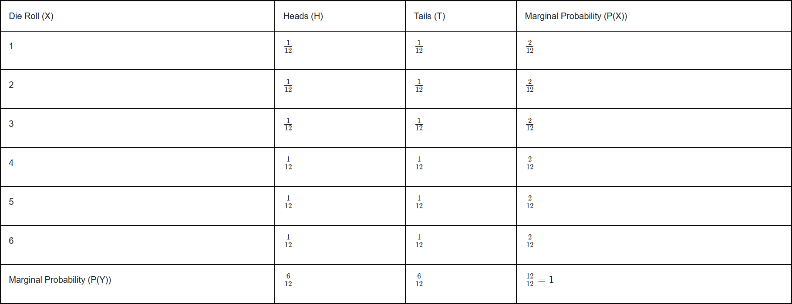

Day 3. You’re still here. That means you’re built different.
At this point, you might be wondering, Do I really need all this stats stuff? The answer? Absolutely. AI isn’t magic—it’s math in disguise. And the deeper you understand it, the more control you have over what you're building.
This is the part most people skim over. They want shortcuts. But you? You’re putting in the work. And that’s what’s going to set you apart when it’s time to actually build something powerful.
So let’s lock in, power through, and add another solid piece to your AI toolkit.
Joint and Marginal Probability: A Deep Dive into Probability Distributions
Joint probability represents the likelihood of two or more events occurring simultaneously. We denote the joint probability of events A and B as P(A,B) or P(A∩B).
That's it really.
Now, let's talk about marginal probability.
Marginal Probability
Marginalization is the process of converting a joint probability distribution into a marginal
probability distribution by summing over one or more variables. It's called marginalization
because traditionally, the sums were written
in the margins of joint probability tables.
Now you may be wondering what crap did I just talked about? Well, in simple terms, the marginal
probability is the probability of a single event occurring, independent of other events. So instead of
P(A∩B), we just want to find P(A) happening.
And marginalization means converting a joint probability distribution into a marginal probability.
For discrete variables:
P(A) =
P(A,B) (sum over all values of
B)
is called sigma, and basically
means sum everything inside me. It's typically for a range, i.e.,
= 2x1 + 2x2 + 2x3 .... 2xN. Here it means just over B.
Why Do We Add Over B?
When we calculate P(A), we are trying to ignore or marginalizing
out the effect of B. Essentially, B could be any of its possible values, and we want to include
all those possibilities in our calculation. Adding up the joint probabilities ensures we account for
every scenario where A happens.
For example:
- If A is "It rains today" and B is "I take an umbrella,"
the joint probabilities P(A,B) cover cases like:
- It rains, and I take an umbrella.
- It rains, and I don't take an umbrella.
To find the total probability that "It rains today" (P(A)), regardless of whether
I take an umbrella, we add the probabilities for both scenarios:
P(Rain)=P(Rain,Umbrella)+P(Rain,No Umbrella)
Another example;

Here's a table showing all possible combinations of the die roll (X) and coin flip (Y), along with their
joint probabilities. Since the die has 6 sides and the coin has 2 outcomes, there are 6x2 = 12 equally
likely outcomes. And if we add,
our total will always come out to be 1 (1/12 + 1/12 + ... + 1/12 = 12/12 = 1).
Marginal Probability of X
Now, let's say we want to find the marginal probability of X, i.e., the probability of getting a
certain die roll, regardless of the coin flip.
For example, let's calculate P(X=1), the probability of rolling a 1 on the die.
In the table, when X=1, there are two possible outcomes for the coin flip:
- Heads: P(X=1,Y=Heads)=1/12
- Tails: P(X=1,Y=Tails)=1/12
To find P(X=1), we add these joint probabilities together, because we're interested in all the ways
that X=1 can happen, no matter what the coin flip is:
P(X=1)=P(X=1,Y=Heads)+P(X=1,Y=Tails)
So,
P(X=1)=1/12+1/12=2/12
This is the
marginal probability of X=1, which means the probability of rolling a 1, no matter whether it's
heads or tails on the coin.
That's it. Now, let's spice things up,
For continuous variables:
P(A) = ∫ P(A,B) dB
When dealing with continuous random variables, the process of finding marginal probabilities is
similar to the discrete case, but instead of summing over the possible values of B, we integrate over
the possible range of values for B. Let's
go through this with an example.
Let's imagine we have two continuous random variables:
- X represents the height of a person in centimeters, which can range from 150 cm
to 200 cm.
- Y represents the weight of a person in kilograms, which can range from 40 kg to
100 kg.
We want to calculate the marginal probability of X (height), regardless of the value of Y (weight).
Joint Probability Density Function:
In the continuous case, to find the joint probability density function P(X,Y), we can't use addition
as we were in the discrete variables, because, as you know, we are dealing with infinite values here.
Now what? For simplicity, let's
assume that the values for both height and weight are equally likely within their ranges. This is called
a uniform
distribution. In simple terms, it means that every height (from 150 cm to 200 cm) and every
weight (from 40 kg to 100 kg) has the same chance of occurring.
First, we find the total area: The total area of the rectangle formed by the ranges of X and Y is the product of the lengths of the sides of the rectangle.
Range of X (Height):
- X (height) can range from 150 cm to 200 cm.
- So, the total possible range for X is: 200-150= 50 cm
Range
of Y (Weight):
- Y (weight) can range from 40 kg to 100 kg.
- So, the total possible range for Y is: 100-40= 60
kg
Area=(200-150)x(100-40)=50x60=3000 units
This area represents the total
probability mass over the entire range of X and Y. Basically the addition of every variable.
Since the distribution is uniform, the total probability is spread evenly across the entire area.
Therefore, the probability density function P(X=x,Y=y) is constant across the entire area. To ensure
that the total probability adds up to
1, we divide by the total area:
P(X=x,Y=y)=1/Area=1/3000
We can easily represent the uniform probability over the ranges X∈[150,200] and Y∈[40,100].
∈ is simply means, IS AN ELEMENT OF, i.e., X∈[150,200] means X is an element from 150 and
200. The square brackets ([]) mean that 150 and 200 are both
inclusive here.
And now to find the marginal probability of X (height), we integrate the joint probability density
function
P(X,Y) over all possible values of Y. In this case, Y ranges from 40 kg to 100 kg.
The formula for the marginal probability P(X) is:
P(X)= 40∫100 P(X=x,Y=y) dy
Now, substitute the joint probability density P(X=x,Y=y)=1/3000 into the equation:
P(X)=
40∫100 1/3000 dy
The integral of 1/3000 with respect to y over the range from 40 to 100 is:
P(X)=
So, the marginal probability of X (height) is 150, which reflects the likelihood of any specific
height within the range of 150 cm to 200 cm, regardless of the weight.
CONGRATULATIONS!!!
You have just completed Day 3. Now do re-read the whole thing again. Until you can understand every concept. Take a pen and paper; and make notes. Revise. And remember, nothing is tough. You just need to have the hunger for knowledge.